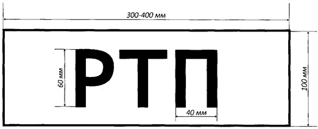

Оперативный штаб на месте пожара в обязательном порядке создается в следующих случаях:
Работой оперативного штаба на месте пожара должен руководить начальник, одновременно являющийся заместителем РТП.
В состав оперативного штаба на месте пожара по решению РТП включается руководящий состав органов управления и подразделений пожарной охраны, который может состоять из следующих нештатных должностей оперативного штаба на месте пожара:
В состав оперативного штаба на месте пожара по решению РТП могут включаться представители администрации организаций и служб жизнеобеспечения. Оперативный штаб на месте пожара располагается в месте, определяемом РТП, обеспечивается необходимым для управления оборудованием и обозначается: днем - красным флагом с надписью "ШТАБ"; ночью - красным фонарем или другим световым указателем красного цвета.
56. Работа оперативного штаба на месте пожара осуществляется на основе распоряжений и указаний РТП.
По номеру (рангу) пожара N 1 (N 1-"бис") РТП имеет право назначать должностных лиц, указанных в пункте 55 настоящего Боевого устава, без создания оперативного штаба на месте пожара.
Основными задачами оперативного штаба на месте пожара являются:
В целях обеспечения деятельности оперативного штаба на месте пожара по управлению силами и средствами по решению РТП может привлекаться подвижный пункт управления.
БУ могут создаваться по решению РТП на части территории на месте пожара в целях выполнения поставленной боевой задачи, путем сосредоточения сил и средств участников боевых действий по тушению пожара.
БУ могут создаваться как по месту проведения, так и по видам проводимых боевых действий по тушению пожаров.
При создании на пожаре пяти и более БУ по решению РТП организуются СПР, объединяющие несколько БУ.
Основные боевые действия по тушению пожаров на БУ возглавляет начальник БУ, в СПР - начальник СПР. При создании СПР начальники БУ подчиняются начальнику СПР.
РТП, начальник оперативного штаба на месте пожара, начальник тыла, начальник БУ (СПР) и связной должны иметь нарукавные повязки.
ОПИСАНИЕ НАРУКАВНОЙ ПОВЯЗКИ ДЛЯ РУКОВОДИТЕЛЯ ТУШЕНИЯ ПОЖАРА, РУКОВОДИТЕЛЯ ЛИКВИДАЦИИ ЧРЕЗВЫЧАЙНОЙ СИТУАЦИИ, НАЧАЛЬНИКА ОПЕРАТИВНОГО ШТАБА НА МЕСТЕ ПОЖАРА (ЧС), НАЧАЛЬНИКА ТЫЛА, ЧЛЕНОВ ОПЕРАТИВНОЙ ГРУППЫ, НАЧАЛЬНИКА БОЕВОГО УЧАСТКА, НАЧАЛЬНИКА СЕКТОРА ПРОВЕДЕНИЯ РАБОТ, СВЯЗНОГО
Нарукавная повязка для руководителя тушения пожара, руководителя ликвидации ЧС, начальника оперативного штаба на месте пожара (ЧС), начальника боевого участка, начальника сектора проведения работ, начальника тыла, связного изготавливается из красного материала, на который наносится соответствующая надпись: РТП, НШ, НБУ, НСПР, НТ, С - белого цвета. При необходимости состав должностных лиц может быть расширен - ответственный за соблюдением правил по охране труда (ОТ), начальник КПП ГДЗС (НКПП).
Схема нанесения надписи
